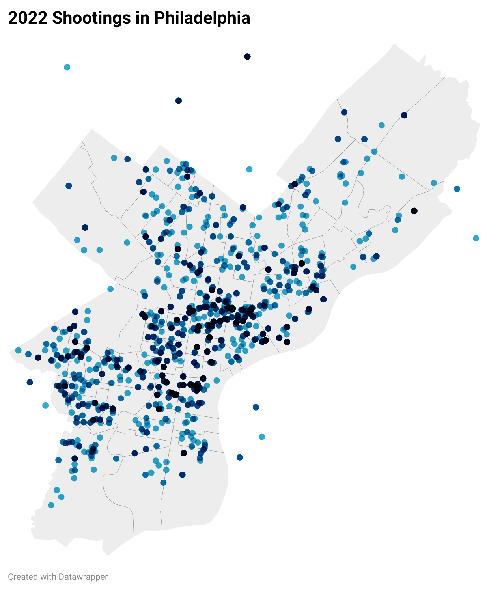

By Cory Miller
In 2020, the COVID pandemic kickstarted a separate epidemic across the U.S. In America’s biggest cities, gun violence spiked dramatically. During the pandemic gun deaths rose forty-three percent in the largest cities in the countries. Even as the pandemic waned, shootings remained elevated. No city has dealt with the brunt of gun violence post-pandemic like the city of brotherly love.
Since 2020, over 8,000 people in Philadelphia have been the victim of a shooting. While the violence has taken its toll on the residents of the city, data suggests that the epidemic has not affected all Philadelphia residents equally. In the past, it has been well-documented that gun violence is connected to race. Those who identify as white have been affected far less by gun violence than people of color. Not just in Philadelphia but in other cities like New York and Los Angeles. That is the case in Philadelphia: In 2023, those of Black and Hispanic ethnicity accounted for 92% of all the shootings.
However, gun violence in Philly is directly correlated to another topic: household income. Unsurprisingly the average income in the city is less than that of most Philadelphia suburbs. However, there are also sections of the city that distance themselves in terms of income. Most of the shootings in the city are concentrated in areas with smaller yearly incomes. Those who live in wealthier areas of the city have been relatively unaffected by gun violence.
Generally speaking, the shootings are clustered around a few areas. Those areas are on the lower side of household income. The map on the right shows the Median Household Income per Zip Code. Areas with less net come are more lightly shaded. The two maps demonstrate the overlap between the majoirty of shootings and lower income levels. While there have been shootings throughout the city, the shootings in wealthier areas could be described as outliers. Gun violence is not consistently happening in all neighborhoods of the city. Over the past few years, it’s been the same sections who have had to live with gun violence as part of their day-to-day lives. According to a Philadelphia Inquirer poll, less affluent residents were more likely to agree that gun violence has significantly worsened their quality of life, compared with wealthier ones.
A heat map demonstrates that while the numbers may be down, the geographic spots where violence is still most often occurring are practically unchanged. The 2023 and 2022 heat maps look almost identical.
The graph shows that lower income often correlates with gun violence. The number of shootings trend down as the mediad income increases.
To combat the violence the city has taken several steps. Philadelphia Mayor Jim Kenny has made gun violence his administration’s “top priority.” According to the City of Philadelphia website, between 2022 and 2023, the Kenny Administration invested “346 million” to combat gun violence. New police strategies and routes have been undertaken to thwart the violence. Police have focused on removing guns from circulation. Community wellness initiatives have also been established to aid the long-term fight against gun violence. These initiatives include violence intervention programs and trauma-informed resources.
To date, the results have been positive. As of November 2023, homicides are down by twenty-six percent over 2021 and by nineteen percent over 2022. While the numbers are trending in the right direction, the city has yet to find a solution to where the violence is occurring. Philadelphia City Controller Rebecca Rynhar said she has encouraged Mayor Kenny to "take specific action in the 14 ZIP codes most impacted by gun violence." Since its inception, the Philadelphia gun violence epidemic has not been one that affects all of its residents. It wreaks havoc on those who need support the most.
Sources:Simpla Maps; Philadelphia Office of the Controller; Philadelphia Mayor's Office